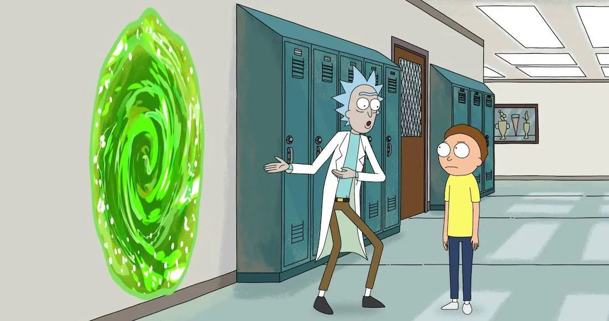

morty

Morty tiene 14 años.
En "Raising Gazorpazorp", Beth admitió accidentalmente que cuando Morty era un bebé, Jerry llenó a Morty de sus propias inseguridades, convirtiéndolo en el adolescente ansioso que vemos en la serie. En el episodio piloto, los padres de Morty insisten en que tiene algún tipo de discapacidad de aprendizaje. Rick luego afirma que la baja inteligencia de Morty enmascara la alta inteligencia de Rick, actuando como un camuflaje que evita que se rastree la increíble inteligencia de Rick. En "Rickmurai Jack" se revela que la mayoría de los Mortys fueron criados en La Ciudadela para servir a Ricks, así como para actuar como camuflaje.
Básicamente, los clones eran necesarios para aquellos Ricks cuyos Mortys originales murieron. Si bien nunca se afirma explícitamente que nuestro Morty estaba entre los Mortys que se crearon en The Citadel, Rick alude a eso y le dice a Morty "Dios, ustedes realmente fueron criados para Solaricks" confirma que Morty nunca fue un clon creado en la Ciudadela, ya que Morty regresó a su universo original cuando Rick reinició a los viajeros interdimensionales y no regresó a la Ciudadela. También en el episodio, Rick le arranca el cabello a Morty y usa su ADN para encontrar a Rick, quien mató a su familia, quien es el verdadero abuelo de Morty.
Toda la familia Smith parece tener recuerdos de Morty creciendo en su hogar , incluida la familia original de Morty de la Dimensión Cronenberg. Esto es digno de mención, ya que parece que una vez que crecen en la Ciudadela, los Mortys se entregan inmediatamente a Rick como compañero, no hubo tal cosa con Morty, porque su abuelo original ni siquiera regresó a la familia, y Rick C-137 se instaló en esta dimensión solo porque el abuelo original de Morty es el asesino de la familia de Rick C-137 y Rick C-137 estaba esperando que el asesino de su familia regresara a su dimensión de origen.